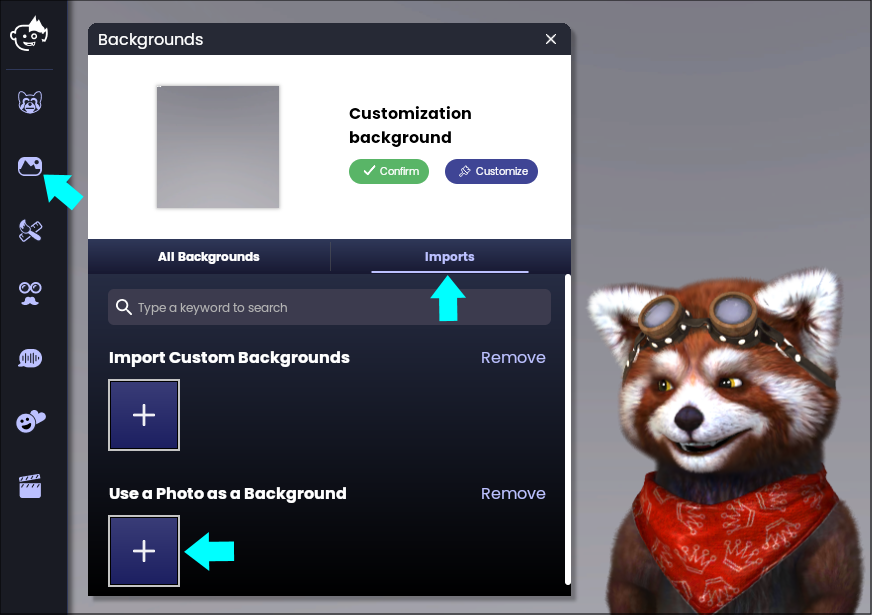
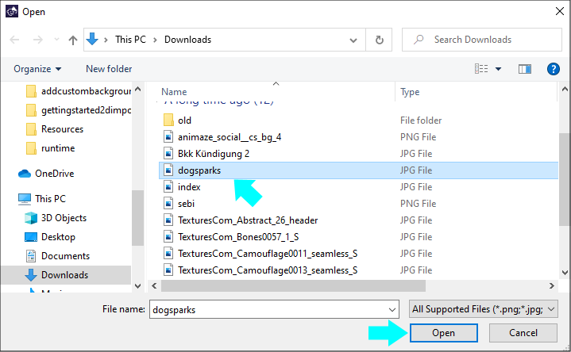
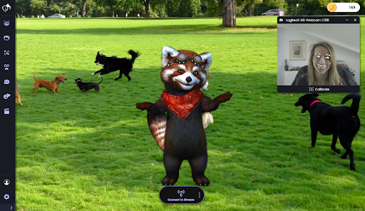

Animazeでカスタム背景を追加する方法
Animazeでは、カスタム背景として使用する画像をコンピュータに追加するだけで、好きな画像ファイルを背景に設定できます。
次の手順でカスタム背景をAnimazeに追加します:
1.Animazeを開きます
2.山のアイコンの「背景」ボタンをクリックします. 背景ギャラリーで「インポートした写真と動画」のセクションの「+」をクリックします

3.背景として使用したい画像を選択し、「開く」をクリックします

4.これで、Animazeにカスタム背景の画像を追加できました

注意:カスタム背景として使用する画像は、1920x1080ピクセル(1080p)以上で16:9のアスペクト比にすることをおすすめします。